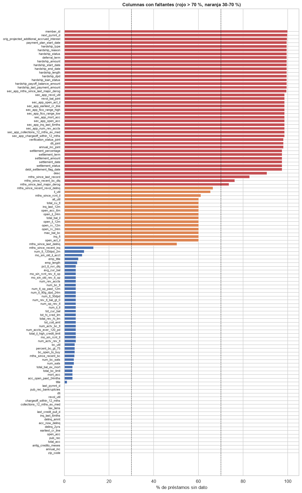
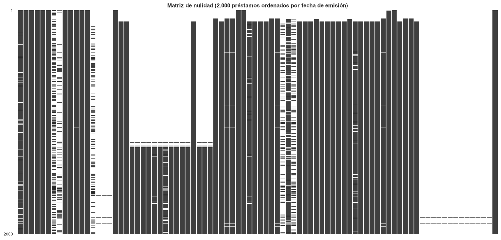
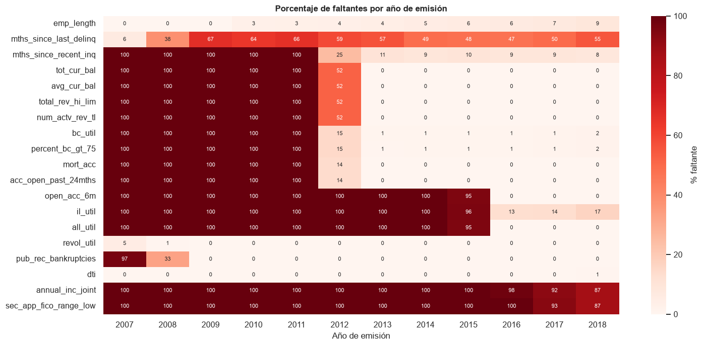
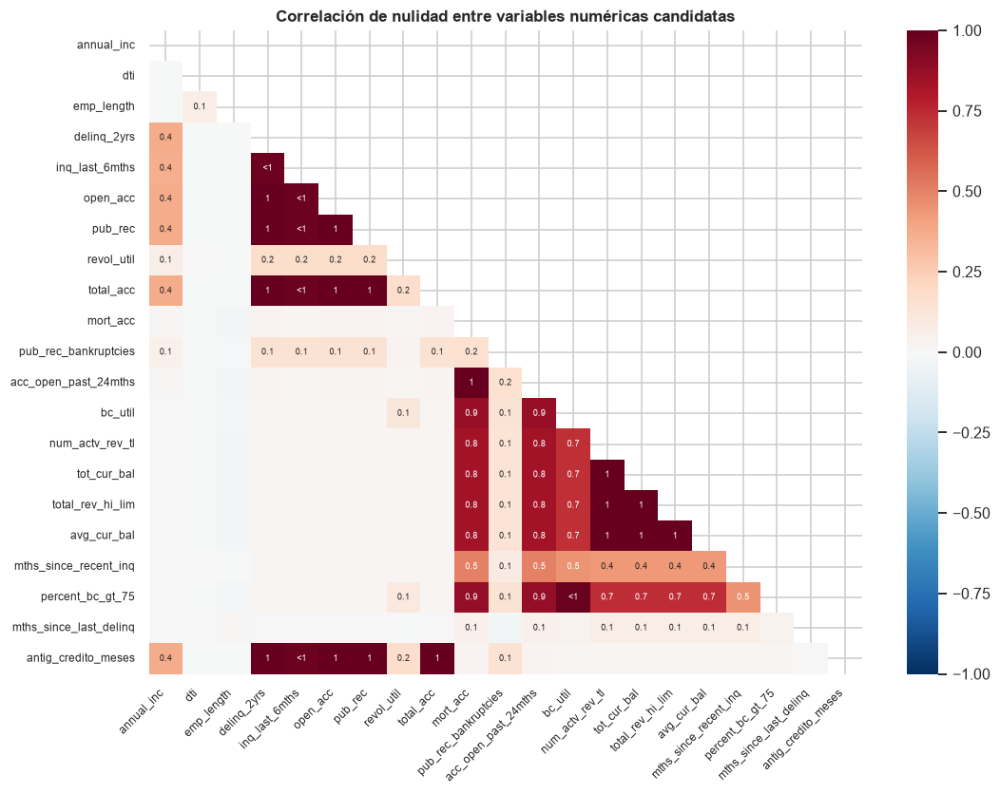

4. Valores faltantes#
Sección 9.10.4.1.4 del enunciado. Se cuantifican los faltantes de las 154 columnas del archivo
intermedio (las 152 originales más antig_credito_meses e issue_year), se examina
su patrón (por columnas, por filas y por año de emisión), se evalúa si dependen de la variable
objetivo y se contrasta la hipótesis de faltantes completamente al azar (MCAR) con la prueba de
Little (1988). El capítulo termina con el plan de tratamiento por variable.
import sys
import warnings
sys.path.insert(0, "../src")
warnings.filterwarnings("ignore")
import matplotlib.pyplot as plt
import missingno as msno
import numpy as np
import pandas as pd
import seaborn as sns
from scipy import stats
import estadistica as est
import utils as u
u.estilo()
pd.set_option("display.max_columns", 30, "display.width", 180, "display.max_rows", 200)
df = u.cargar_prestamos()
df.loc[(df["dti"] < 0) | (df["dti"] > 100), "dti"] = np.nan
print(f"{len(df):,} préstamos x {df.shape[1]} columnas")
1,348,059 préstamos x 154 columnas
4.1 Faltantes por columna#
falt = pd.DataFrame({"n_faltantes": df.isna().sum(), "%": 100 * df.isna().mean()})
falt["grupo"] = pd.cut(falt["%"], [-0.1, 0, 5, 30, 70, 100],
labels=["0 %", "(0, 5] %", "(5, 30] %", "(30, 70] %", "> 70 %"])
print(falt["grupo"].value_counts().sort_index().to_string())
falt[falt["n_faltantes"] > 0].sort_values("%", ascending=False).round(2)
grupo
0 % 40
(0, 5] % 30
(5, 30] % 26
(30, 70] % 16
> 70 % 42
| n_faltantes | % | grupo | |
|---|---|---|---|
| member_id | 1348059 | 100.00 | > 70 % |
| next_pymnt_d | 1345310 | 99.80 | > 70 % |
| orig_projected_additional_accrued_interest | 1344300 | 99.72 | > 70 % |
| payment_plan_start_date | 1342305 | 99.57 | > 70 % |
| hardship_length | 1342305 | 99.57 | > 70 % |
| hardship_dpd | 1342305 | 99.57 | > 70 % |
| hardship_loan_status | 1342305 | 99.57 | > 70 % |
| hardship_start_date | 1342305 | 99.57 | > 70 % |
| hardship_payoff_balance_amount | 1342305 | 99.57 | > 70 % |
| hardship_last_payment_amount | 1342305 | 99.57 | > 70 % |
| hardship_amount | 1342305 | 99.57 | > 70 % |
| deferral_term | 1342305 | 99.57 | > 70 % |
| hardship_status | 1342305 | 99.57 | > 70 % |
| hardship_reason | 1342305 | 99.57 | > 70 % |
| hardship_type | 1342305 | 99.57 | > 70 % |
| hardship_end_date | 1342305 | 99.57 | > 70 % |
| sec_app_mths_since_last_major_derog | 1341414 | 99.51 | > 70 % |
| sec_app_revol_util | 1329757 | 98.64 | > 70 % |
| revol_bal_joint | 1329430 | 98.62 | > 70 % |
| sec_app_collections_12_mths_ex_med | 1329429 | 98.62 | > 70 % |
| sec_app_fico_range_high | 1329429 | 98.62 | > 70 % |
| sec_app_inq_last_6mths | 1329429 | 98.62 | > 70 % |
| sec_app_mort_acc | 1329429 | 98.62 | > 70 % |
| sec_app_open_acc | 1329429 | 98.62 | > 70 % |
| sec_app_open_act_il | 1329429 | 98.62 | > 70 % |
| sec_app_num_rev_accts | 1329429 | 98.62 | > 70 % |
| sec_app_chargeoff_within_12_mths | 1329429 | 98.62 | > 70 % |
| sec_app_earliest_cr_line | 1329429 | 98.62 | > 70 % |
| sec_app_fico_range_low | 1329429 | 98.62 | > 70 % |
| verification_status_joint | 1322464 | 98.10 | > 70 % |
| dti_joint | 1322262 | 98.09 | > 70 % |
| annual_inc_joint | 1322259 | 98.09 | > 70 % |
| settlement_amount | 1314773 | 97.53 | > 70 % |
| debt_settlement_flag_date | 1314773 | 97.53 | > 70 % |
| settlement_date | 1314773 | 97.53 | > 70 % |
| settlement_status | 1314773 | 97.53 | > 70 % |
| settlement_term | 1314773 | 97.53 | > 70 % |
| settlement_percentage | 1314773 | 97.53 | > 70 % |
| desc | 1222106 | 90.66 | > 70 % |
| mths_since_last_record | 1118644 | 82.98 | > 70 % |
| mths_since_recent_bc_dlq | 1029039 | 76.33 | > 70 % |
| mths_since_last_major_derog | 994309 | 73.76 | > 70 % |
| mths_since_recent_revol_delinq | 898097 | 66.62 | (30, 70] % |
| il_util | 883043 | 65.50 | (30, 70] % |
| mths_since_rcnt_il | 824677 | 61.18 | (30, 70] % |
| all_util | 810514 | 60.12 | (30, 70] % |
| total_cu_tl | 810462 | 60.12 | (30, 70] % |
| open_acc_6m | 810462 | 60.12 | (30, 70] % |
| inq_last_12m | 810462 | 60.12 | (30, 70] % |
| open_rv_12m | 810461 | 60.12 | (30, 70] % |
| open_rv_24m | 810461 | 60.12 | (30, 70] % |
| max_bal_bc | 810461 | 60.12 | (30, 70] % |
| inq_fi | 810461 | 60.12 | (30, 70] % |
| open_act_il | 810461 | 60.12 | (30, 70] % |
| open_il_12m | 810461 | 60.12 | (30, 70] % |
| total_bal_il | 810461 | 60.12 | (30, 70] % |
| open_il_24m | 810461 | 60.12 | (30, 70] % |
| mths_since_last_delinq | 679942 | 50.44 | (30, 70] % |
| mths_since_recent_inq | 176820 | 13.12 | (5, 30] % |
| num_tl_120dpd_2m | 120150 | 8.91 | (5, 30] % |
| mo_sin_old_il_acct | 108324 | 8.04 | (5, 30] % |
| emp_title | 85944 | 6.38 | (5, 30] % |
| emp_length | 78545 | 5.83 | (5, 30] % |
| pct_tl_nvr_dlq | 70430 | 5.22 | (5, 30] % |
| avg_cur_bal | 70298 | 5.21 | (5, 30] % |
| num_rev_accts | 70277 | 5.21 | (5, 30] % |
| mo_sin_old_rev_tl_op | 70277 | 5.21 | (5, 30] % |
| mo_sin_rcnt_rev_tl_op | 70277 | 5.21 | (5, 30] % |
| mo_sin_rcnt_tl | 70276 | 5.21 | (5, 30] % |
| num_actv_bc_tl | 70276 | 5.21 | (5, 30] % |
| num_actv_rev_tl | 70276 | 5.21 | (5, 30] % |
| total_rev_hi_lim | 70276 | 5.21 | (5, 30] % |
| num_bc_tl | 70276 | 5.21 | (5, 30] % |
| total_il_high_credit_limit | 70276 | 5.21 | (5, 30] % |
| num_op_rev_tl | 70276 | 5.21 | (5, 30] % |
| tot_cur_bal | 70276 | 5.21 | (5, 30] % |
| num_accts_ever_120_pd | 70276 | 5.21 | (5, 30] % |
| num_tl_op_past_12m | 70276 | 5.21 | (5, 30] % |
| num_tl_90g_dpd_24m | 70276 | 5.21 | (5, 30] % |
| num_tl_30dpd | 70276 | 5.21 | (5, 30] % |
| num_il_tl | 70276 | 5.21 | (5, 30] % |
| tot_coll_amt | 70276 | 5.21 | (5, 30] % |
| num_rev_tl_bal_gt_0 | 70276 | 5.21 | (5, 30] % |
| tot_hi_cred_lim | 70276 | 5.21 | (5, 30] % |
| bc_util | 64661 | 4.80 | (0, 5] % |
| percent_bc_gt_75 | 64304 | 4.77 | (0, 5] % |
| bc_open_to_buy | 63892 | 4.74 | (0, 5] % |
| mths_since_recent_bc | 62970 | 4.67 | (0, 5] % |
| num_sats | 58590 | 4.35 | (0, 5] % |
| num_bc_sats | 58590 | 4.35 | (0, 5] % |
| acc_open_past_24mths | 50030 | 3.71 | (0, 5] % |
| total_bc_limit | 50030 | 3.71 | (0, 5] % |
| total_bal_ex_mort | 50030 | 3.71 | (0, 5] % |
| mort_acc | 50030 | 3.71 | (0, 5] % |
| title | 16662 | 1.24 | (0, 5] % |
| last_pymnt_d | 2325 | 0.17 | (0, 5] % |
| pub_rec_bankruptcies | 1365 | 0.10 | (0, 5] % |
| dti | 909 | 0.07 | (0, 5] % |
| revol_util | 897 | 0.07 | (0, 5] % |
| chargeoff_within_12_mths | 145 | 0.01 | (0, 5] % |
| collections_12_mths_ex_med | 145 | 0.01 | (0, 5] % |
| tax_liens | 105 | 0.01 | (0, 5] % |
| last_credit_pull_d | 57 | 0.00 | (0, 5] % |
| inq_last_6mths | 30 | 0.00 | (0, 5] % |
| earliest_cr_line | 29 | 0.00 | (0, 5] % |
| delinq_2yrs | 29 | 0.00 | (0, 5] % |
| open_acc | 29 | 0.00 | (0, 5] % |
| delinq_amnt | 29 | 0.00 | (0, 5] % |
| pub_rec | 29 | 0.00 | (0, 5] % |
| total_acc | 29 | 0.00 | (0, 5] % |
| acc_now_delinq | 29 | 0.00 | (0, 5] % |
| antig_credito_meses | 29 | 0.00 | (0, 5] % |
| annual_inc | 4 | 0.00 | (0, 5] % |
| zip_code | 1 | 0.00 | (0, 5] % |
De las 154 columnas del archivo intermedio (152 más antig_credito_meses e issue_year), 40 no
tienen faltantes, 56 tienen menos de 30 %, 16 entre 30 % y 70 % y 42 más de 70 %. Las columnas
con más de 70 % son, salvo tres, de tres tipos: variables de coprestatario (sec_app_*,
*_joint, 98,1-99,5 %), variables de hardship y settlement (97,5-99,7 %, además posteriores a
la originación) y variables de «meses desde el último evento» (mths_since_last_record,
mths_since_recent_bc_dlq, mths_since_last_major_derog), cuyo faltante significa que el evento
nunca ocurrió. Las otras tres son member_id (vacía), desc (texto libre, 90,7 %) y
next_pymnt_d (99,8 %, posterior a la originación).
con_falt = falt[falt["%"] > 0].sort_values("%")
fig, ax = plt.subplots(figsize=(10, 20))
colores = np.select([con_falt["%"] > 70, con_falt["%"] > 30], ["#C44E52", "#DD8452"], "#4C72B0")
ax.barh(con_falt.index, con_falt["%"], color=colores)
for x in (30, 70):
ax.axvline(x, color="k", ls="--", lw=0.8)
ax.set_xlabel("% de préstamos sin dato")
ax.set_title("Columnas con faltantes (rojo > 70 %, naranja 30-70 %)")
ax.tick_params(axis="y", labelsize=7)
u.guardar_fig(fig, "04_faltantes_columnas")
plt.show()

4.2 Patrón de los faltantes#
4.2.1 Matriz de nulidad#
La matriz muestra 2.000 préstamos elegidos al azar y ordenados por fecha de emisión (de arriba, 2007, a abajo, 2018), para las columnas con faltantes estrictamente entre 0 % y 100 %, sin las de fuga de información ni las de texto libre. Cada franja blanca es un dato ausente.
cols_patron = [c for c in falt.index if 0 < falt.loc[c, "%"] < 100 and c not in u.FUGA
and c not in ("desc", "emp_title", "title", "zip_code")]
orden_fecha = pd.to_datetime(df["issue_d"], format="%b-%Y")
m = df.assign(_f=orden_fecha).sample(2000, random_state=u.SEMILLA).sort_values("_f")
ax = msno.matrix(m[cols_patron], figsize=(17, 8), fontsize=7, sparkline=False)
ax.set_title("Matriz de nulidad (2.000 préstamos ordenados por fecha de emisión)", weight="bold")
plt.savefig(u.FIGURAS / "04_msno_matriz.png")
plt.show()

La matriz muestra que los faltantes no están dispersos al azar: forman bloques horizontales.
Los préstamos más antiguos (parte superior) carecen de todo el bloque de variables del buró de
crédito que Lending Club empezó a registrar en 2012, y un segundo bloque (open_acc_6m,
il_util, all_util…) solo aparece en los préstamos recientes (parte inferior).
4.2.2 Faltantes por año de emisión#
seleccion = ["emp_length", "mths_since_last_delinq", "mths_since_recent_inq", "tot_cur_bal",
"avg_cur_bal", "total_rev_hi_lim", "num_actv_rev_tl", "bc_util", "percent_bc_gt_75",
"mort_acc", "acc_open_past_24mths", "open_acc_6m", "il_util", "all_util", "revol_util",
"pub_rec_bankruptcies", "dti", "annual_inc_joint", "sec_app_fico_range_low"]
por_anio = 100 * df[seleccion].isna().groupby(df["issue_year"]).mean()
fig, ax = plt.subplots(figsize=(15, 7))
sns.heatmap(por_anio.T, cmap="Reds", annot=True, fmt=".0f", annot_kws={"size": 7},
cbar_kws={"label": "% faltante"}, ax=ax)
ax.set_title("Porcentaje de faltantes por año de emisión")
ax.set_xlabel("Año de emisión")
u.guardar_fig(fig, "04_faltantes_anio")
plt.show()

El mapa por año confirma la causa: los faltantes de avg_cur_bal, total_rev_hi_lim y demás
variables del buró son 100 % hasta 2011, 52 % en 2012 y cero desde 2013; los de
acc_open_past_24mths y mort_acc también son 100 % hasta 2011, pero solo 14 % en 2012.
open_acc_6m, il_util y all_util faltan casi por completo hasta 2015 (95 % ese año) y existen
desde 2016. Son faltantes estructurales, determinados por la fecha de emisión y no por el
prestatario. emp_length es distinto: su faltante crece de 0 % en 2007-2009 a cerca de 9 % en
2018 y depende del solicitante.
4.2.3 Correlación de nulidad entre las variables candidatas#
El mapa de missingno muestra la correlación entre los indicadores de faltante: 1 significa que
dos variables siempre faltan juntas.
cand = [c for c in u.NUM_EDA if df[c].isna().any()]
ax = msno.heatmap(df[cand], figsize=(11, 8), fontsize=8, cmap="RdBu_r")
ax.set_title("Correlación de nulidad entre variables numéricas candidatas", weight="bold")
plt.savefig(u.FIGURAS / "04_msno_heatmap.png")
plt.show()

Las variables del buró tienen correlaciones de nulidad cercanas a 1 entre sí: faltan juntas,
porque todas provienen del mismo reporte. emp_length, dti y mths_since_last_delinq tienen
correlaciones de nulidad casi nulas con el resto: sus faltantes tienen otros mecanismos.
4.2.4 Concentración de faltantes por fila#
cand_modelo = [c for c in u.NUM_EDA if c != "mths_since_last_delinq"]
n_falt_fila = df[cand_modelo].isna().sum(axis=1)
dist_filas = n_falt_fila.value_counts().sort_index().rename("préstamos").to_frame()
dist_filas["%"] = (100 * dist_filas["préstamos"] / len(df)).round(3)
dist_filas["tasa_default_%"] = (100 * df.groupby(n_falt_fila)["default"].mean()).round(2)
dist_filas
| préstamos | % | tasa_default_% | |
|---|---|---|---|
| 0 | 1073945 | 79.666 | 20.34 |
| 1 | 180855 | 13.416 | 19.19 |
| 2 | 19527 | 1.449 | 22.45 |
| 3 | 3089 | 0.229 | 20.72 |
| 4 | 17120 | 1.270 | 17.60 |
| 5 | 3118 | 0.231 | 13.73 |
| 6 | 301 | 0.022 | 21.26 |
| 7 | 67 | 0.005 | 26.87 |
| 8 | 7 | 0.001 | 14.29 |
| 9 | 47226 | 3.503 | 14.82 |
| 10 | 2767 | 0.205 | 23.17 |
| 11 | 8 | 0.001 | 62.50 |
| 17 | 25 | 0.002 | 12.00 |
| 18 | 4 | 0.000 | 0.00 |
El 79,7 % de los préstamos no tiene ningún faltante en las variables candidatas y el 13,4 % tiene
uno solo (casi siempre mths_since_recent_inq o emp_length). Los 47.226 préstamos con nueve
faltantes (3,5 %) son el núcleo de los préstamos antiguos sin bloque de buró; junto con los de
diez o más suman 50.030, los mismos que carecen de acc_open_past_24mths y mort_acc. Su tasa de
default (14,8 %) es menor que la global, como corresponde a las cohortes antiguas (capítulo 1).
Otros 20.000 préstamos, en las filas de 4 y 5 faltantes, carecen solo de avg_cur_bal,
total_rev_hi_lim, tot_cur_bal y num_actv_rev_tl (la parte de 2012 sin ese bloque).
4.3 ¿Dependen los faltantes de la variable objetivo?#
Para cada variable candidata con faltantes se compara la tasa de default entre los préstamos con
y sin dato, con una prueba chi-cuadrado de independencia entre el indicador de faltante y
default. Si los faltantes fueran MCAR, la tasa sería la misma en ambos grupos.
filas = []
for c in cand + ["emp_title"]:
ind = df[c].isna()
tabla = pd.crosstab(ind, df["default"])
chi2, p, _, _ = stats.chi2_contingency(tabla)
filas.append({"variable": c, "%_faltante": 100 * ind.mean(),
"default_con_dato_%": 100 * df.loc[~ind, "default"].mean(),
"default_sin_dato_%": 100 * df.loc[ind, "default"].mean(), "chi2": chi2, "p": p})
dep = pd.DataFrame(filas).set_index("variable")
dep["diferencia_pp"] = dep["default_sin_dato_%"] - dep["default_con_dato_%"]
dep.sort_values("diferencia_pp").round(3)
| %_faltante | default_con_dato_% | default_sin_dato_% | chi2 | p | diferencia_pp | |
|---|---|---|---|---|---|---|
| variable | ||||||
| annual_inc | 0.000 | 19.978 | 0.000 | 0.140 | 0.708 | -19.978 |
| inq_last_6mths | 0.002 | 19.979 | 10.000 | 1.296 | 0.255 | -9.979 |
| antig_credito_meses | 0.002 | 19.979 | 10.345 | 1.135 | 0.287 | -9.634 |
| delinq_2yrs | 0.002 | 19.979 | 10.345 | 1.135 | 0.287 | -9.634 |
| open_acc | 0.002 | 19.979 | 10.345 | 1.135 | 0.287 | -9.634 |
| pub_rec | 0.002 | 19.979 | 10.345 | 1.135 | 0.287 | -9.634 |
| total_acc | 0.002 | 19.979 | 10.345 | 1.135 | 0.287 | -9.634 |
| mths_since_recent_inq | 13.117 | 20.718 | 15.078 | 3056.499 | 0.000 | -5.640 |
| acc_open_past_24mths | 3.711 | 20.159 | 15.285 | 715.651 | 0.000 | -4.874 |
| mort_acc | 3.711 | 20.159 | 15.285 | 715.651 | 0.000 | -4.874 |
| num_actv_rev_tl | 5.213 | 20.210 | 15.765 | 823.008 | 0.000 | -4.445 |
| tot_cur_bal | 5.213 | 20.210 | 15.765 | 823.008 | 0.000 | -4.445 |
| total_rev_hi_lim | 5.213 | 20.210 | 15.765 | 823.008 | 0.000 | -4.445 |
| avg_cur_bal | 5.215 | 20.210 | 15.770 | 821.318 | 0.000 | -4.440 |
| percent_bc_gt_75 | 4.770 | 20.148 | 16.592 | 484.273 | 0.000 | -3.557 |
| bc_util | 4.797 | 20.147 | 16.638 | 473.943 | 0.000 | -3.509 |
| mths_since_last_delinq | 50.439 | 20.697 | 19.272 | 428.324 | 0.000 | -1.426 |
| revol_util | 0.067 | 19.978 | 20.736 | 0.276 | 0.599 | 0.758 |
| dti | 0.067 | 19.976 | 23.542 | 7.006 | 0.008 | 3.566 |
| pub_rec_bankruptcies | 0.101 | 19.974 | 24.469 | 16.954 | 0.000 | 4.495 |
| emp_title | 6.375 | 19.555 | 26.193 | 2216.966 | 0.000 | 6.637 |
| emp_length | 5.827 | 19.549 | 26.921 | 2514.070 | 0.000 | 7.372 |
En cinco grupos de variables la tasa de default difiere entre préstamos con y sin dato, con p < 0,01:
emp_length: sin antigüedad laboral declarada, el default sube de 19,5 % a 26,9 % (+7,4 puntos). El faltante es informativo, probablemente porque incluye a solicitantes sin empleo formal. Se imputa la mediana y se añade el indicadoremp_length_faltante.mths_since_recent_inq: sin consultas recientes registradas, el default baja de 20,7 % a 15,1 %. Se imputa y se añadeconsulta_faltante.Bloque del buró (
avg_cur_bal,total_rev_hi_lim,num_actv_rev_tl,mort_acc,acc_open_past_24mths): sin dato, el default es 4,4 a 4,9 puntos menor, porque el faltante identifica a las cohortes de 2007-2012. Se imputa y se añade un único indicadorburo_faltante.mths_since_last_delinq: diferencia de −1,4 puntos; se sustituye porhist_morosidad.dti(p = 0,008) ypub_rec_bankruptcies(p < 0,001) difieren en 3,6 y 4,5 puntos, pero afectan a menos de 0,11 % de los préstamos; basta con la mediana.
En las variables con 29 faltantes (préstamos sin historial en el buró) la diferencia no es significativa (p > 0,25).
4.4 Prueba MCAR de Little#
La prueba de Little contrasta \(H_0\): los datos son MCAR. Compara la media observada de cada
patrón de faltantes con la media global estimada por máxima verosimilitud (algoritmo EM) y
suma las discrepancias ponderadas, que bajo \(H_0\) siguen una \(\chi^2\). Se aplica a todas las
variables numéricas candidatas con faltantes (excepto mths_since_last_delinq, cuyo faltante
tiene un significado conocido) y a default, con los 1.348.059 préstamos. Como verificación de
sensibilidad se repite sobre una muestra de 5.000 préstamos: con un millón de observaciones la
prueba detecta desviaciones mínimas.
vars_little = [c for c in cand if c != "mths_since_last_delinq"] + ["default"]
res_total = est.little_mcar(df[vars_little])
res_muestra = est.little_mcar(df[vars_little].sample(5000, random_state=u.SEMILLA))
pd.DataFrame({"completo (n = 1.348.059)": res_total, "muestra (n = 5.000)": res_muestra}).T
| d2 | gl | p_valor | patrones | |
|---|---|---|---|---|
| completo (n = 1.348.059) | 316617.791665 | 881.0 | 0.000000e+00 | 56.0 |
| muestra (n = 5.000) | 1648.388747 | 325.0 | 1.275182e-175 | 20.0 |
La prueba de Little rechaza MCAR con los datos completos (\(d^2\) = 316.618 con 881 grados de
libertad, 56 patrones de faltantes) y también en la muestra de 5.000 préstamos (p ≈ 10⁻¹⁷⁵), así
que el rechazo no se debe solo al tamaño de muestra. Los faltantes son, como mínimo, MAR: dependen
de variables observadas (el año de emisión) y, en el caso de emp_length, se asocian con el
desenlace. Dos consecuencias para el preprocesamiento:
Eliminar las filas con faltantes (análisis de casos completos) no es válido: sesgaría la muestra hacia los préstamos posteriores a 2012 y descartaría 20 % de los datos, en contra de la condición de usar el conjunto completo.
Los indicadores de faltante conservan la información que la imputación por mediana borraría. La mediana se calcula solo con el conjunto de entrenamiento.
4.5 Plan de tratamiento por variable#
La tabla asigna a cada una de las 154 columnas una decisión según estos criterios, en este orden: (1) decisiones explícitas (identificadores, texto libre, constantes y redundancias de los capítulos 2 y 3); (2) información posterior a la originación → eliminar por fuga; (3) más de 70 % de faltantes → eliminar; (4) variables elegidas para el modelo, tratadas según su tipo; (5) entre 30 % y 70 % de faltantes por estar disponibles solo desde 2015-2016 → eliminar; (6) el resto no se selecciona por redundante o poco informativo.
plan_manual = {
"id": "identificador: se conserva solo para la partición común",
"default": "variable objetivo",
"loan_status": "origen de la variable objetivo: eliminar",
"member_id": "vacía: eliminar", "url": "identificador: eliminar", "desc": "texto libre: eliminar",
"title": "texto libre (duplica purpose): eliminar", "emp_title": "texto libre, 380 mil valores: eliminar",
"zip_code": "3 dígitos, redundante con addr_state: eliminar",
"policy_code": "constante: eliminar", "issue_d": "fecha de emisión: solo descriptiva",
"issue_year": "solo descriptiva", "earliest_cr_line": "reemplazada por antig_credito_meses",
"mths_since_last_delinq": "50 % faltante informativo: indicador hist_morosidad",
"emp_length": "imputar mediana de entrenamiento + indicador emp_length_faltante",
"mths_since_recent_inq": "imputar mediana de entrenamiento + indicador consulta_faltante",
"avg_cur_bal": "imputar mediana + log1p; indicador buro_faltante (bloque de buró anterior a 2012)",
"dti": "fuera de [0, 100] a faltante; imputar mediana",
"installment": "redundante con loan_amnt, int_rate y term: eliminar",
"fico_range_low": "redundante con fico_range_high (r = 1): eliminar",
"grade": "redundante con int_rate: eliminar", "sub_grade": "redundante con int_rate: eliminar",
"funded_amnt": "casi idéntica a loan_amnt y posterior a la solicitud: eliminar",
"bc_util": "redundante con revol_util (r = 0,86): eliminar",
"percent_bc_gt_75": "redundante con revol_util y bc_util (r > 0,72): eliminar",
"tot_cur_bal": "redundante con avg_cur_bal (r = 0,84): eliminar",
"revol_bal": "redundante con total_rev_hi_lim (r = 0,81): eliminar",
"total_acc": "redundante con open_acc (r = 0,70): eliminar",
}
modelo_num = ["loan_amnt", "term", "int_rate", "emp_length", "annual_inc", "dti", "fico_range_high",
"delinq_2yrs", "inq_last_6mths", "open_acc", "pub_rec", "revol_util", "mort_acc",
"pub_rec_bankruptcies", "acc_open_past_24mths", "num_actv_rev_tl", "total_rev_hi_lim",
"avg_cur_bal", "mths_since_recent_inq", "antig_credito_meses"]
modelo_cat = ["purpose", "home_ownership", "addr_state", "verification_status", "application_type",
"initial_list_status"]
def decision(c):
if c in plan_manual:
return plan_manual[c]
if c in u.FUGA:
return "posterior a la originación (fuga): eliminar"
if falt.loc[c, "%"] > 70:
return "> 70 % faltante: eliminar"
if c in modelo_cat:
return "categórica: agrupar < 1 % y codificar one-hot"
if c in modelo_num:
log = " + log1p" if c in ["annual_inc", "total_rev_hi_lim", "avg_cur_bal"] else ""
return ("imputar mediana de entrenamiento" if falt.loc[c, "%"] > 0 else "sin faltantes") + log
if falt.loc[c, "%"] > 30:
return "30-70 % faltante, disponible solo desde 2015-2016: eliminar"
return "no seleccionada (redundante o poco informativa según el EDA)"
plan = falt[["%"]].round(2).assign(decision=[decision(c) for c in falt.index])
print(plan["decision"].str.split(":").str[-1].str.strip().value_counts().to_string())
plan
decision
eliminar 91
no seleccionada (redundante o poco informativa según el EDA) 31
imputar mediana de entrenamiento 10
agrupar < 1 % y codificar one-hot 6
sin faltantes 4
imputar mediana de entrenamiento + log1p 2
solo descriptiva 2
se conserva solo para la partición común 1
imputar mediana de entrenamiento + indicador emp_length_faltante 1
fuera de [0, 100] a faltante; imputar mediana 1
reemplazada por antig_credito_meses 1
indicador hist_morosidad 1
imputar mediana + log1p; indicador buro_faltante (bloque de buró anterior a 2012) 1
imputar mediana de entrenamiento + indicador consulta_faltante 1
variable objetivo 1
| % | decision | |
|---|---|---|
| id | 0.00 | identificador: se conserva solo para la partic... |
| member_id | 100.00 | vacía: eliminar |
| loan_amnt | 0.00 | sin faltantes |
| funded_amnt | 0.00 | casi idéntica a loan_amnt y posterior a la sol... |
| funded_amnt_inv | 0.00 | posterior a la originación (fuga): eliminar |
| term | 0.00 | sin faltantes |
| int_rate | 0.00 | sin faltantes |
| installment | 0.00 | redundante con loan_amnt, int_rate y term: eli... |
| grade | 0.00 | redundante con int_rate: eliminar |
| sub_grade | 0.00 | redundante con int_rate: eliminar |
| emp_title | 6.38 | texto libre, 380 mil valores: eliminar |
| emp_length | 5.83 | imputar mediana de entrenamiento + indicador e... |
| home_ownership | 0.00 | categórica: agrupar < 1 % y codificar one-hot |
| annual_inc | 0.00 | imputar mediana de entrenamiento + log1p |
| verification_status | 0.00 | categórica: agrupar < 1 % y codificar one-hot |
| issue_d | 0.00 | fecha de emisión: solo descriptiva |
| loan_status | 0.00 | origen de la variable objetivo: eliminar |
| pymnt_plan | 0.00 | posterior a la originación (fuga): eliminar |
| url | 0.00 | identificador: eliminar |
| desc | 90.66 | texto libre: eliminar |
| purpose | 0.00 | categórica: agrupar < 1 % y codificar one-hot |
| title | 1.24 | texto libre (duplica purpose): eliminar |
| zip_code | 0.00 | 3 dígitos, redundante con addr_state: eliminar |
| addr_state | 0.00 | categórica: agrupar < 1 % y codificar one-hot |
| dti | 0.07 | fuera de [0, 100] a faltante; imputar mediana |
| delinq_2yrs | 0.00 | imputar mediana de entrenamiento |
| earliest_cr_line | 0.00 | reemplazada por antig_credito_meses |
| fico_range_low | 0.00 | redundante con fico_range_high (r = 1): eliminar |
| fico_range_high | 0.00 | sin faltantes |
| inq_last_6mths | 0.00 | imputar mediana de entrenamiento |
| mths_since_last_delinq | 50.44 | 50 % faltante informativo: indicador hist_moro... |
| mths_since_last_record | 82.98 | > 70 % faltante: eliminar |
| open_acc | 0.00 | imputar mediana de entrenamiento |
| pub_rec | 0.00 | imputar mediana de entrenamiento |
| revol_bal | 0.00 | redundante con total_rev_hi_lim (r = 0,81): el... |
| revol_util | 0.07 | imputar mediana de entrenamiento |
| total_acc | 0.00 | redundante con open_acc (r = 0,70): eliminar |
| initial_list_status | 0.00 | categórica: agrupar < 1 % y codificar one-hot |
| out_prncp | 0.00 | posterior a la originación (fuga): eliminar |
| out_prncp_inv | 0.00 | posterior a la originación (fuga): eliminar |
| total_pymnt | 0.00 | posterior a la originación (fuga): eliminar |
| total_pymnt_inv | 0.00 | posterior a la originación (fuga): eliminar |
| total_rec_prncp | 0.00 | posterior a la originación (fuga): eliminar |
| total_rec_int | 0.00 | posterior a la originación (fuga): eliminar |
| total_rec_late_fee | 0.00 | posterior a la originación (fuga): eliminar |
| recoveries | 0.00 | posterior a la originación (fuga): eliminar |
| collection_recovery_fee | 0.00 | posterior a la originación (fuga): eliminar |
| last_pymnt_d | 0.17 | posterior a la originación (fuga): eliminar |
| last_pymnt_amnt | 0.00 | posterior a la originación (fuga): eliminar |
| next_pymnt_d | 99.80 | posterior a la originación (fuga): eliminar |
| last_credit_pull_d | 0.00 | posterior a la originación (fuga): eliminar |
| last_fico_range_high | 0.00 | posterior a la originación (fuga): eliminar |
| last_fico_range_low | 0.00 | posterior a la originación (fuga): eliminar |
| collections_12_mths_ex_med | 0.01 | no seleccionada (redundante o poco informativa... |
| mths_since_last_major_derog | 73.76 | > 70 % faltante: eliminar |
| policy_code | 0.00 | constante: eliminar |
| application_type | 0.00 | categórica: agrupar < 1 % y codificar one-hot |
| annual_inc_joint | 98.09 | > 70 % faltante: eliminar |
| dti_joint | 98.09 | > 70 % faltante: eliminar |
| verification_status_joint | 98.10 | > 70 % faltante: eliminar |
| acc_now_delinq | 0.00 | no seleccionada (redundante o poco informativa... |
| tot_coll_amt | 5.21 | no seleccionada (redundante o poco informativa... |
| tot_cur_bal | 5.21 | redundante con avg_cur_bal (r = 0,84): eliminar |
| open_acc_6m | 60.12 | 30-70 % faltante, disponible solo desde 2015-2... |
| open_act_il | 60.12 | 30-70 % faltante, disponible solo desde 2015-2... |
| open_il_12m | 60.12 | 30-70 % faltante, disponible solo desde 2015-2... |
| open_il_24m | 60.12 | 30-70 % faltante, disponible solo desde 2015-2... |
| mths_since_rcnt_il | 61.18 | 30-70 % faltante, disponible solo desde 2015-2... |
| total_bal_il | 60.12 | 30-70 % faltante, disponible solo desde 2015-2... |
| il_util | 65.50 | 30-70 % faltante, disponible solo desde 2015-2... |
| open_rv_12m | 60.12 | 30-70 % faltante, disponible solo desde 2015-2... |
| open_rv_24m | 60.12 | 30-70 % faltante, disponible solo desde 2015-2... |
| max_bal_bc | 60.12 | 30-70 % faltante, disponible solo desde 2015-2... |
| all_util | 60.12 | 30-70 % faltante, disponible solo desde 2015-2... |
| total_rev_hi_lim | 5.21 | imputar mediana de entrenamiento + log1p |
| inq_fi | 60.12 | 30-70 % faltante, disponible solo desde 2015-2... |
| total_cu_tl | 60.12 | 30-70 % faltante, disponible solo desde 2015-2... |
| inq_last_12m | 60.12 | 30-70 % faltante, disponible solo desde 2015-2... |
| acc_open_past_24mths | 3.71 | imputar mediana de entrenamiento |
| avg_cur_bal | 5.21 | imputar mediana + log1p; indicador buro_faltan... |
| bc_open_to_buy | 4.74 | no seleccionada (redundante o poco informativa... |
| bc_util | 4.80 | redundante con revol_util (r = 0,86): eliminar |
| chargeoff_within_12_mths | 0.01 | no seleccionada (redundante o poco informativa... |
| delinq_amnt | 0.00 | no seleccionada (redundante o poco informativa... |
| mo_sin_old_il_acct | 8.04 | no seleccionada (redundante o poco informativa... |
| mo_sin_old_rev_tl_op | 5.21 | no seleccionada (redundante o poco informativa... |
| mo_sin_rcnt_rev_tl_op | 5.21 | no seleccionada (redundante o poco informativa... |
| mo_sin_rcnt_tl | 5.21 | no seleccionada (redundante o poco informativa... |
| mort_acc | 3.71 | imputar mediana de entrenamiento |
| mths_since_recent_bc | 4.67 | no seleccionada (redundante o poco informativa... |
| mths_since_recent_bc_dlq | 76.33 | > 70 % faltante: eliminar |
| mths_since_recent_inq | 13.12 | imputar mediana de entrenamiento + indicador c... |
| mths_since_recent_revol_delinq | 66.62 | 30-70 % faltante, disponible solo desde 2015-2... |
| num_accts_ever_120_pd | 5.21 | no seleccionada (redundante o poco informativa... |
| num_actv_bc_tl | 5.21 | no seleccionada (redundante o poco informativa... |
| num_actv_rev_tl | 5.21 | imputar mediana de entrenamiento |
| num_bc_sats | 4.35 | no seleccionada (redundante o poco informativa... |
| num_bc_tl | 5.21 | no seleccionada (redundante o poco informativa... |
| num_il_tl | 5.21 | no seleccionada (redundante o poco informativa... |
| num_op_rev_tl | 5.21 | no seleccionada (redundante o poco informativa... |
| num_rev_accts | 5.21 | no seleccionada (redundante o poco informativa... |
| num_rev_tl_bal_gt_0 | 5.21 | no seleccionada (redundante o poco informativa... |
| num_sats | 4.35 | no seleccionada (redundante o poco informativa... |
| num_tl_120dpd_2m | 8.91 | no seleccionada (redundante o poco informativa... |
| num_tl_30dpd | 5.21 | no seleccionada (redundante o poco informativa... |
| num_tl_90g_dpd_24m | 5.21 | no seleccionada (redundante o poco informativa... |
| num_tl_op_past_12m | 5.21 | no seleccionada (redundante o poco informativa... |
| pct_tl_nvr_dlq | 5.22 | no seleccionada (redundante o poco informativa... |
| percent_bc_gt_75 | 4.77 | redundante con revol_util y bc_util (r > 0,72)... |
| pub_rec_bankruptcies | 0.10 | imputar mediana de entrenamiento |
| tax_liens | 0.01 | no seleccionada (redundante o poco informativa... |
| tot_hi_cred_lim | 5.21 | no seleccionada (redundante o poco informativa... |
| total_bal_ex_mort | 3.71 | no seleccionada (redundante o poco informativa... |
| total_bc_limit | 3.71 | no seleccionada (redundante o poco informativa... |
| total_il_high_credit_limit | 5.21 | no seleccionada (redundante o poco informativa... |
| revol_bal_joint | 98.62 | > 70 % faltante: eliminar |
| sec_app_fico_range_low | 98.62 | > 70 % faltante: eliminar |
| sec_app_fico_range_high | 98.62 | > 70 % faltante: eliminar |
| sec_app_earliest_cr_line | 98.62 | > 70 % faltante: eliminar |
| sec_app_inq_last_6mths | 98.62 | > 70 % faltante: eliminar |
| sec_app_mort_acc | 98.62 | > 70 % faltante: eliminar |
| sec_app_open_acc | 98.62 | > 70 % faltante: eliminar |
| sec_app_revol_util | 98.64 | > 70 % faltante: eliminar |
| sec_app_open_act_il | 98.62 | > 70 % faltante: eliminar |
| sec_app_num_rev_accts | 98.62 | > 70 % faltante: eliminar |
| sec_app_chargeoff_within_12_mths | 98.62 | > 70 % faltante: eliminar |
| sec_app_collections_12_mths_ex_med | 98.62 | > 70 % faltante: eliminar |
| sec_app_mths_since_last_major_derog | 99.51 | > 70 % faltante: eliminar |
| hardship_flag | 0.00 | posterior a la originación (fuga): eliminar |
| hardship_type | 99.57 | posterior a la originación (fuga): eliminar |
| hardship_reason | 99.57 | posterior a la originación (fuga): eliminar |
| hardship_status | 99.57 | posterior a la originación (fuga): eliminar |
| deferral_term | 99.57 | posterior a la originación (fuga): eliminar |
| hardship_amount | 99.57 | posterior a la originación (fuga): eliminar |
| hardship_start_date | 99.57 | posterior a la originación (fuga): eliminar |
| hardship_end_date | 99.57 | posterior a la originación (fuga): eliminar |
| payment_plan_start_date | 99.57 | posterior a la originación (fuga): eliminar |
| hardship_length | 99.57 | posterior a la originación (fuga): eliminar |
| hardship_dpd | 99.57 | posterior a la originación (fuga): eliminar |
| hardship_loan_status | 99.57 | posterior a la originación (fuga): eliminar |
| orig_projected_additional_accrued_interest | 99.72 | posterior a la originación (fuga): eliminar |
| hardship_payoff_balance_amount | 99.57 | posterior a la originación (fuga): eliminar |
| hardship_last_payment_amount | 99.57 | posterior a la originación (fuga): eliminar |
| disbursement_method | 0.00 | no seleccionada (redundante o poco informativa... |
| debt_settlement_flag | 0.00 | posterior a la originación (fuga): eliminar |
| debt_settlement_flag_date | 97.53 | posterior a la originación (fuga): eliminar |
| settlement_status | 97.53 | posterior a la originación (fuga): eliminar |
| settlement_date | 97.53 | posterior a la originación (fuga): eliminar |
| settlement_amount | 97.53 | posterior a la originación (fuga): eliminar |
| settlement_percentage | 97.53 | posterior a la originación (fuga): eliminar |
| settlement_term | 97.53 | posterior a la originación (fuga): eliminar |
| default | 0.00 | variable objetivo |
| antig_credito_meses | 0.00 | imputar mediana de entrenamiento |
| issue_year | 0.00 | solo descriptiva |
De las 154 columnas se eliminan 91 (fuga de información, identificadores, texto libre, variables constantes, redundantes, con más de 70 % de faltantes o con 30-70 % de faltantes por estar disponibles solo desde 2015-2016) y otras 31 no se seleccionan por ser redundantes o poco informativas según el EDA. El modelo usa 20 variables numéricas originales, 4 indicadores binarios y 6 categóricas.
u.guardar_json({"numericas": modelo_num, "categoricas": modelo_cat,
"log1p": ["annual_inc", "total_rev_hi_lim", "avg_cur_bal"],
"indicadores": ["hist_morosidad", "emp_length_faltante", "consulta_faltante",
"buro_faltante"]}, u.PROCESSED / "variables_modelo.json")